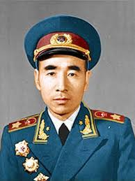
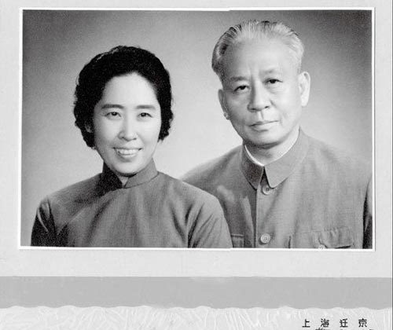
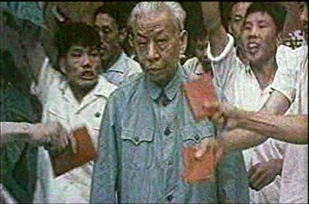
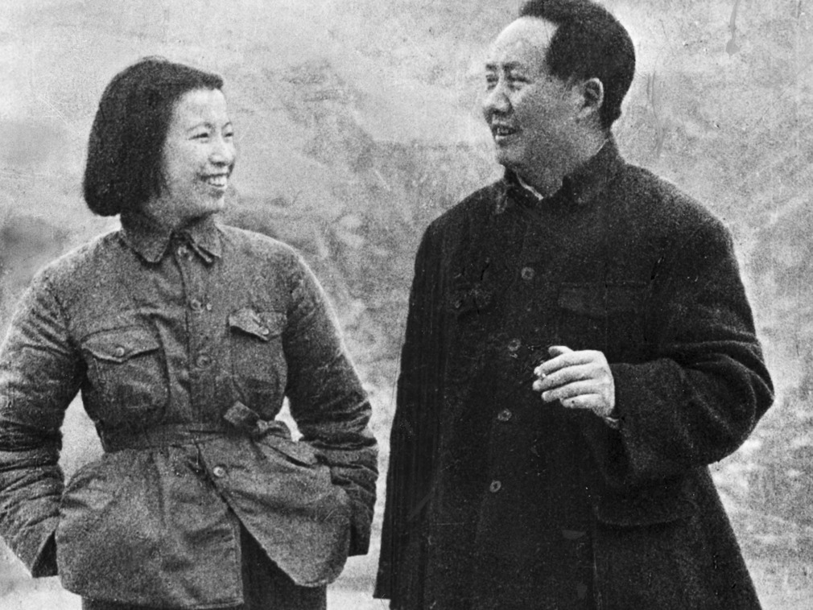
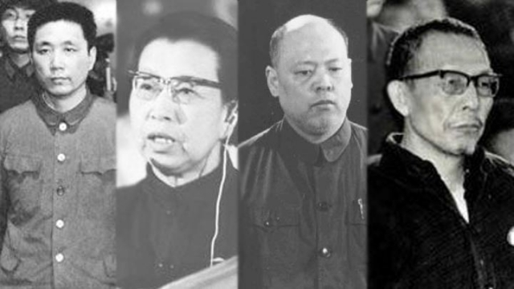

100 Years of the Chinese Communist Party

Lin Biao - Revolutionary General
Lin Biao family

Liu Shaoqi and wife

Liu Shaoqi under persecution
young Zhou Enlai
Zhou Enlai - Premier and Diplomat

Mao and Jiang Qing
Mao and Jiang Qing
Jiang Qing - Mao's 4th Wife and Cultural Revolution Figure

The Gang of Four